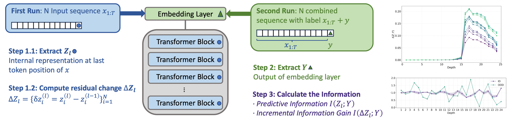
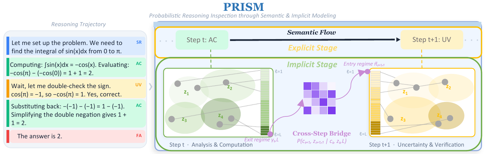
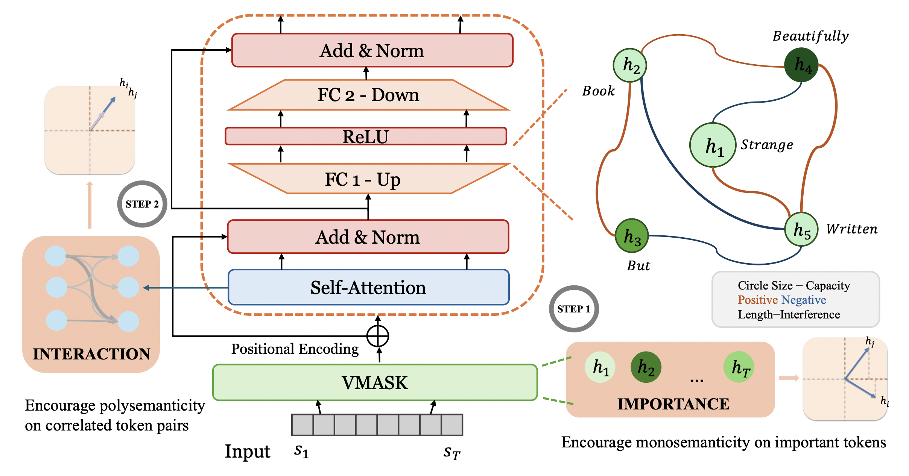

I study how models work and how to make them better, as a single model and as multiple agents working together.
I'm a Ph.D. student in Computer Science at Rice University.
Single model
- Understand
- How information flows flows, how reasoning is computed, and how neurons encode features.
- Improve
- Controlling models through their representations during post-training.
Multiple agents
- Understand
- When a team of agents integrates the information and solve a p[roblem together].
- Improve
- Improving collaborations between each agent.
Collaborative Adaptation in Multi-agent System at Test-time
Multi-agent language-model systems must do more than divide a problem among several models. Their collective intelligence depends on how well the agents communicate with one another. Training during the task instead changes the collaborative behavior of the agents, like what it shares, what it asks its peers for, and how to folds its contributions into its further reasoning.
Can training at test-time improve a collaborating a syemtem's performance?
-
2026
The Generalization Ridge: Information Flow in Natural Language Generation
Ruidi Chang, Chunyuan Deng, Hanjie Chen
Models are not monotonically better with depth. InfoRidge traces predictive information across layers: it peaks in the upper-middle layers, a "ridge" where generalization is strongest, then drops in the final layers. Under distribution shift, models down-weight deep layers and rely more on the intermediate ones.

-
2026
PRISM: A Dual View of LLM Reasoning through Semantic Flow and Latent Computation
Ruidi Chang, Jiawei Zhou, Hanjie Chen
Reasoning traces are usually studied either as text across steps or as hidden states across layers. PRISM models both at once: an explicit stage labels each step's semantic role (setup, computation, verification, answer) and models how roles flow, and an implicit stage finds latent computational regimes inside each step, linked across steps by a bridge matrix. Failed trajectories are more likely to get trapped in unproductive verification loops and split into distinct modes such as overthinking and premature commitment.

-
2025
Steering Information Utility in Key-Value Memory for Language Model Post-Training
Chunyuan Deng, Ruidi Chang, Hanjie Chen
-
2025
Learning Distribution-wise Control in Representation Space for Language Models
Chunyuan Deng, Ruidi Chang, Hanjie Chen
-
2025
SAFR: Neuron Redistribution for Interpretability
Ruidi Chang, Chunyuan Deng, Hanjie Chen
Neurons often mix many features at once (superposition). SAFR redistributes them: monosemantic for important tokens, polysemantic where interactions matter, which makes the model more interpretable.

-
2026
Language Models are Symbolic Learners in Arithmetic
Chunyuan Deng, Zhiqi Li, Roy Xie, Ruidi Chang, Hanjie Chen
-
2024
Large Language Model Based Multi-Agents: A Survey of Progress and Challenges
Taicheng Guo, Xiuying Chen, Yaqi Wang, Ruidi Chang, Shichao Pei, Nitesh V. Chawla, Olaf Wiest, Xiangliang Zhang
- Reviewer
- ACL ARR 2025 Feb, IEEE BigData 2025, EMNLP BlackboxNLP Workshop 2025, COLM XLLM-Reason-Plan Workshop 2025, COLING 2025
- Volunteer
- EMNLP BlackboxNLP Workshop 2024
- Mentoring
- Nursultan Asilbekov (SURF Program)